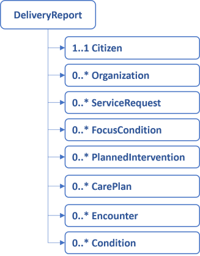

This page is part of the KLGatewayRehab (v2.2.0: Release) based on FHIR (HL7® FHIR® Standard) R4. This is the current published version in its permanent home (it will always be available at this URL). For a full list of available versions, see the Directory of published versions
Home
Official URL: http://fhir.kl.dk/rehab/ImplementationGuide/kl.dk.fhir.rehab
This implementation guide describes the delivery of §140 rehabilitation data to KL Gateway. The data originates from the documentation made by physiotherapist in the Danish municipalities.The reporting aims for compliance with the Danish core profiles and the current work on a shared information model (FKI) for data in the Danish municipalities.
The profiles for the reporting are restricted to allow only the information that is required to report to the KL Gateway.
Overview
The data is reported as a collection of instances. A report may contain instances that conforms to the profiles defined in this implementation guide. See figure below.

Whereas the report may seem unconstrained, each profile define constraints on attributes, datatypes and cardinalities. See descriptions below.
Citizen
Information about the citizen that is the subjects of the report.
Attributes
A civil registration number (CPR-nr)
A deseased attribute signifying whether the patient is alive or dead
An organisation identifier that identifies the municipality holding and reporting the data
Validation
One and only one civil registration number exists, and is a syntactically valid CPR-nr
One and only one deseased attribute
One and only one managing organization exitis, and is a syntactically valid SOR code (only code length is currently validated in the profile, but the authorization validates the actual SOR code)
Organization
The organization profile is used to represent organizations such as general practitioners and hospitals sending service requests. Be aware that the managing organization (the municipality keeping the record) is represented in the citizen profile.
Attributes
An organisation identifier
Validation
One and only one organisation identifier exists, and is a syntactically valid SOR code or FK-org code
ServiceRequest
This model is used to represent when a municipality recieves a referal for §140 rehabilitation (Danish: GGOP).
Attributes
A reference to the organization that requests the intervention
The intervention being requested
The reason for the referal expressed as a reference to FocusCondition
A reference to the citizen
The time of the referal
A reference to the referal that this one replaces
A category signifying the type of GGOP
A discharge date
a status reason to express the reason that the service requested is on hold
a date where the first encounter was planned, whether it occurs or not
Two FHIR status attributes (status and intent)
Validation
A reference to the organization is mandatory.
The code for the intervention being requested should always be present and fixed to 'Kommunal genoptræning efter sygehusophold'
One or more references to FocusCondition may be present. It is only nessesary to report these, if they can be drawn directly from the MedCom message.
One and only one reference to the citizen should be present.
The time of the referal is mandatory
A reference to a replaced referal may be present.
There might be one or two categories, one is mandatory
The dischage date is mandatory
The status reason is optional, but 'must support'
The date where the first encounter was planned is optional, but 'must-support'
Both FHIR statuses are mandatory. Each of them should be drawn from the appropriate standard FHIR-ValueSet
FocusCondition
This model holds a diagnosis-code, as it is reported to the municipality as part of the referal from a hospital.
Attributes
A diagnosis code
A diagnosis text
A reference to the citizen
Two FHIR status attributes
Validation
One diagnosis code may exists and should be drawn from SKS
One diagnosis text may exist
One and only one reference to the citizen exists
One FHIR status is mandatory and should be drawn from the appropriate standard FHIR-ValueSet. The other is not mandatory, but it is needed for reporting entered-in-error.
PlannedIntervention
This model holds information about §140 rehabilitation interventions planned for a citizen.
Attributes
A FSIII intervention code
A delivery type code that express whether the intervention is delivered in a group or individually
The time where the intervention was granted
The time where the intervention was stopped
A reference to the citizen
A reference to the ServiceRequest, that started the intervention
The reason for the intervention expressed as a reference to Condition
A reference to the organization that delivers the intervention
A reference to the care plan that this planned intervention is part of
Three FHIR status attributes (status, intent, activity.detail.status)
Validation
One and only one FSIII intervention code may be present and it should be drawn from valid §140 FSIII interventions as expressed by the ValueSet
One and only one delivery type code, which should be drawn from the appropriate ValueSet
One and only one time for when the intervention was granted
The time where the intervention was stopped may be present
One and only one reference to the citizen exists
A reference to the ServiceRequest is optional
A reference to one or more Conditions may exist, but are not required
One and only one reference to the organization that delivers the intervention exists
All FHIR statuses are mandatory. Each of them should be drawn from the appropriate standard FHIR-ValueSet.
The reference to the care plan is mandatory if the intervention is repeating such as 'Fysisk træning'.
CarePlan
The CarePlan is used whenever a §140 training is planned for a citizen in Danish municipalities. Care plan is a way to describe when a number of planned interventions are delivered together with a common schedule.
Attributes
A category code, which can be either 'Opfølgningsforløb efter §140' or
'Interventionsforløb efter §140'
The time where the CarePlan was granted
The time where the CarePlan was stopped
A reference to the ServiceRequest, that started the CarePlan
A reference to the Citizen
An explaination for cancelling the CarePlan before its completion
A reference to the organization that delivers the intervention
Three FHIR status attributes (status, intent, activity.detail.status)
Validation
One and only one category code may be present and it should be drawn from the associated ValueSet.
One and only one time for when the care plan was granted is mandatory
The time where the care plan was stopped may be present
A reference to the ServiceRequest that started the CarePlan is optional
One and only one reference to the Citizen exists
One and only one explaination for cancelling the care plan before its completion shall exist if and only if the status is 'cancelled' or 'stopped'. Else it is prohibited.
One and only one reference to the organization that delivers the intervention exists
All FHIR statuses are mandatory. Each of them should be drawn from the appropriate standard FHIR-ValueSet
Encounter
Information about whenever a citizen meets the §140 rehabilitation staff in a Danish municipality context.
Attributes
Encounter class. The attribute holds a code which describe the place of delivery e.g. home visit or ambulatory.
The encounter start-time
The encounter end-time
A reference to the Citizen
A reference to the CarePlan or PlannedIntervention that this encounter is a delivery of
A FHIR status attribute
Validation
One ond only one encounter class exists, and should be drawn from the standard FHIR-ValueSet
One and only one encounter start-time exists
One and only one end-time may exist
One and only one reference to the Citizen exists
A reference to the CarePlan or PlannedIntervention may exist
One and only one FHIR status exists, and should be drawn from the standard FHIR-ValueSet
Condition
This model contains information about FSIII conditions. They should be reported as long as a condition is true and active, for a living citizen that recieves §140 rehabilitation in Danish municipalities.
Attributes
A FSIII condition code
The time where the condition was reported
A reference to the Citizen
A condition-focus attribute
Two FHIR statuses (clinicalStatus and verificationStatus)
Validation
One and only one FSIII condition code may be present and it should be drawn from valid §140 FSIII conditions as expressed by the ValueSet.
One and only one reporting-time exists
One and only one reference to the Citizen exists
The condition-focus attribute may be set to 'problem-list-item', or not be present. See the detailed documentation.
clinicalStatus is mandatory. VerificationStatus is recommended but only required for when reporting 'entered-in-error'. Each of them should be drawn from the appropriate standard FHIR-ValueSet
This IG defines the global extensions - the ones defined for everyone. These extensions are always in scope wherever FHIR is being used (built Sat, Apr 27, 2024 18:39+1000+10:00)
Package hl7.fhir.uv.phd#1.0.0
ImplementationGuide for Personal Health Devices (PHD), used in remote patient monitoring (e.g., weight scales, blood pressure cuffs, glucose monitors, pulse-oximeters, etc.). (built Thu, May 12, 2022 20:20+0000+00:00)
Package hl7.fhir.dk.core#3.2.0
A FHIR Implementation Guide for the Danish common needs across healthcare sectors (built Mon, May 6, 2024 15:20+0200+02:00)

 KLGatewayRehab
KLGatewayRehab